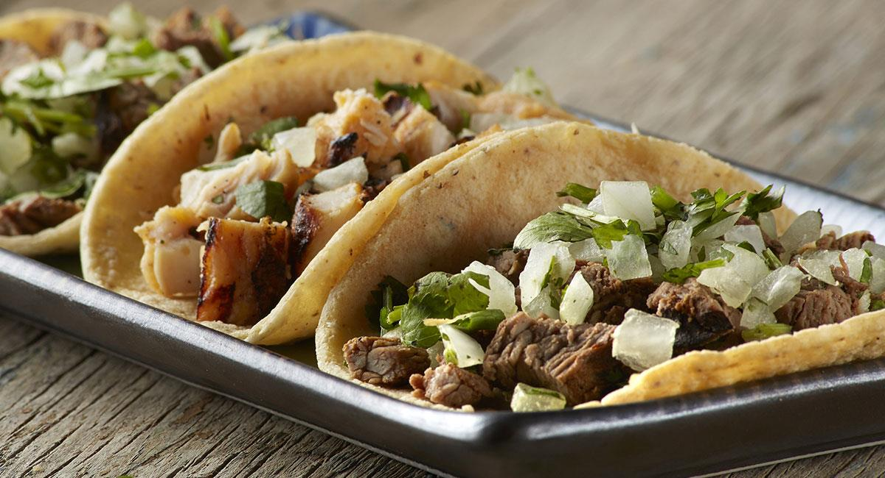

Tacos de bistec

Descripción
Tortilla de maiz con trozos de carne de res sazonada con sal y pimienta.
Ingredientes
- 800 gramos de bistec
- 1 kilogramo de tortillas de maiz
- 2 cucharadas de aceite vegetal
- 1 cucharada de sal
- 1 cucharada de pimienta
- 1 cebolla fileteada
- 4 ramas de cilantro
- 5 limones
Preparación
- Sazonar el bistec con la cucharada de sal y con la cucharada de pimienta. Dejar reposar por 15 minutos.
- Agregar las cucharadas de aceite a un sartén y calentar el aceite por 2 minutos a fuego medio.
- Una vez que el aceite esté caliente, colocar el bistec en el sartén y cocinarlo por ambos lados sin dorarlo mucho. Repetir este paso hasta que cada bistec este cocinado.
- Cortar en trozos pequeños el bistec
- Calentar las tortilas en un sarten y servir en un plato.
- Rellenar cada torilla con los trozos de bistec cortados anteriormente
- Agregar cebolla, cilantro y limón al gusto a cada taco.